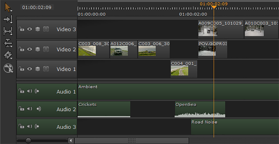

时间线包含参考项目中源剪辑的视频和音频剪辑实例。一致性过程完成后，时间轴将在上下文中显示您的剪辑，并使您能够进行更精细的编辑。
时间线可以包含任意数量的视频序列和音轨，每个音轨都包含引用项目中源剪辑的剪辑实例 -- 对时间线中的剪辑实例进行更改不会影响原始源剪辑。
Nuke 工作室
还具有时间轴上的实时软效果，以及添加包含
。Nk
脚本。请参阅
软效果
和
注意: 一致的 EDLs 只支持一个视频序列。如果您已经从同一个编辑中创建了多个 edl，您可以使用右键单击将每个 edl 添加到时间轴中 新轨道 > 来自 EDL/XML 的新曲目 选项或 导入轨道 电子表格选项卡中的按钮。请参阅 向时间线添加轨迹 .
• 视频切换 -在播放过程中快速关闭和打开视频轨道。保持 Alt 并单击以独奏选定的曲目。还可以启用和禁用轨迹混合和屏蔽。请参阅 在时间线上混合轨道 欲了解更多信息。
• 可编辑时间码 -手动输入所需的播放头位置，或使用上下箭头键或鼠标滚轮来增加播放头位置。
• 播放头位置 -显示与查看器内容同步的播放头位置。
• 时间码 -显示的时间码或帧数取决于 时间 显示 选择模式。可以使用 “缩放” 滑块或使用鼠标滚轮调整比例。
• 音频切换 -在播放期间快速静音音频或将轨道输出设置为左、右或单声道。
• 轨道锁 -保护所选轨道以禁用所有编辑工具。
• 音轨 -包含当前时间线的所有音频剪辑。
• 视频轨道 -包含当前时间线的所有视频序列。
提示: 按住时选择轨迹 Ctrl / Cmd 允许工具同时影响多个轨迹，例如锁定、禁用和调整轨迹大小。
多轨道时间线中的视频轨道从最高轨道向下读取，例如视频 3 、视频 2 、视频 1。因此，如果视频出现在轨道 3 上，则同一时间片中轨道 2 上的视频会被遮挡。
在本例中，尽管播放头在两个视频轨道上交叉剪辑，但在查看器中只显示视频 3 中的剪辑。

另一方面，音轨同时播放 -- 示例中播放头交叉的所有三个音轨一起播放，为视频创建一个完整的音频支持。
提示: 启用 偏好 > 面板 > 时间线 > 显示帧结束标记 在播放头右侧的时间线上绘制一条额外的线，指示当前帧的结束。
|
|